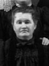

notre ancêtre de la 4ième génération
fiche familiale
Michel Henry/Henri
décède à l'âge de 57 ans
Naissance le 30 septembre 1803 à St-Gervais, cté Bellechasse
Décès le 6 mars 1861 à St-Gervais, cté Bellechasse
Sépulture le 6 mars 1861 à St-Gervais
Père: Jean-Baptiste Henry
Mère: Geneviève Goulet
(sa famille)
Mariage le 26 juillet 1831 à St-Gervais, cté Bellechasse
Contrat de mariage le 20 juillet 1831,
Notaire Gosselin Joachim-O.A., St-Gervais-de-Protais.
Épouse: Basilisse Lemieux
décède à l'âge de 64 ans
Naissance: en 1808,
Décès: 21 octobre 1872 à St-Gervais, cté Bellechasse
Sépulture le 21 octobre 1872 à St-Gervais
Père: Ambroise Lemieux
Mère: Marie-Josephte Couture
(sa famille)
Enfant 1 Basilice Henry
décède à l'âge de 1 mois
Naissance le 27 avril 1832 à St-Gervais, cté Bellechasse
Décès le 25 mai 1832 à St-Gervais, cté Bellechasse
-------------------------------------------------------------------------------
Enfant 2 Marie-Adélaïde-Élizabeth Henry
décède à l'âge de 18 mois
Naissance le 17 juillet 1833 à St-Gervais, cté Bellechasse
Décès le 15 janvier 1835 à St-Gervais, cté Bellechasse
-------------------------------------------------------------------------------
Enfant 3 Michel-Polycarpe Henry
décède à l'âge de 16 mois
Naissance le 26 janvier 1835 à St-Gervais, cté Bellechasse
Décès le 9 juin 1836 à St-Gervais, cté Bellechasse
-------------------------------------------------------------------------------
Enfant 4 Marie-Célina Henry
Naissance le 30 mars 1836 à St-Gervais, cté Bellechasse
Mariage le 20 août 1860 à St-Gervais, cté Bellechasse
Conjoint: Cyprien Asselin
Père: Magloire Asselin
Mère: Reine Garand
-------------------------------------------------------------------------------
Enfant 5 Marie-Philomène Henry
Naissance le 9 juin 1837 à St-Gervais, cté Bellechasse
Mariage le 17 janvier 1860 à St-Gervais, cté Bellechasse
Conjoint: Michel Toussaint
Père: Ignace Toussaint
Mère: Reine Laliberté
-------------------------------------------------------------------------------
Enfant 6 Luce Henry
Naissance le 2 décembre 1838 à St-Gervais, cté Bellechasse
Mariage le 29 juillet 1862 à St-Gervais, cté Bellechasse
Conjoint: Marc Audet
Père: Marcel Audet
Mère: Marie Godbout
-------------------------------------------------------------------------------
Enfant 7 Ferdinand Henry
Naissance le 28 avril 1840 à St-Gervais, cté Bellechasse
Mariage le 8 février 1864 à St-Raphaël, cté Bellechasse
Conjointe: Desanges Bélanger
Père: Jacques Bélanger
Mère: Marie-Anne Corriveau
-------------------------------------------------------------------------------
Enfant 8 André-Amable Henry
décède à l'âge de 30 ans
Naissance le 18 novembre 1841 à St-Gervais, cté Bellechasse
Décès en 1872 à St-Gervais, cté Bellechasse
C'est lui qui resta sur le bien paternel à St-Gervais.
Mariage le 10 février 1863 à Ste-Hénédine, cté Dorchester
Conjointe: Maire-Célina Royer
Père: Joseph Royer
Mère: Marie Dubord
-------------------------------------------------------------------------------
| |
Enfant 9 Raymond Henry/Henri décède à l'âge de 86 ans. Naissance le 24 juillet 1843 à St-Gervais, cté Bellechasse Décès le 23 mars 1930 à St-Malachie, cté Dorcheste Mariage le 5 octobre 1869 à St-Malachie, cté Dorchester Conjointe: Marie Blais n. 15 avr 1850 d. 5 mar 1923 (sa famille) |
Enfant 10 Marie-Adèle Henry
Naissance le 4 juin 1846 à St-Gervais, cté Bellechasse
Décès avant 1871
Mariage le 4 avril 1864 à St-Gervais, cté Bellechasse
Conjoint: Pierre-Célestin Bélanger
-------------------------------------------------------------------------------
|  |
Enfant 11 Delphine Henry Naissance le 28 février 1850 à St-Gervais, cté Bellechasse Mariage le 6 avril 1875 à St-Médard de Warwick, cté Arthabaska Conjoint: Joseph-Omer Boutin Père: Joseph Boutin Mère: Suzanne Henry Ils eurent 14 enfants, 7 gars et 7 filles. |
Enfant 12 Marie-Éléonore Henry
Naissance le 8 décembre 1851 à St-Gervais, cté Bellechasse
-------------------------------------------------------------------------------
Enfant 13 Fortunat Henry
Alla vivre aux États-Unis.
-------------------------------------------------------------------------------
Enfant 14 Marie-Vitaline Henry
Mariage le 24 novembre 1869 à St-Gervais, cté Bellechasse
Conjoint: Joseph Boutin
Père: Joseph Boutin
Mère: Suzanne Henry
-------------------------------------------------------------------------------
Enfant 15 Onésime Henry
Mariage à Ste-Sophie-d'Halifax, cté Mégantic
Conjointe: Malvina Lizotte
n. en 1859 d. en 1939
Ils eurent 10 enfants, 6 gars et 4 filles.
-------------------------------------------------------------------------------